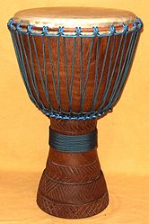

A djembe or jembe is a rope-tuned skin-covered goblet drum played with bare
hands, originally from West Africa. According to the Bambara people in Mali, the
name of the djembe comes from the saying "Anke djé, anke bé" which translates to
"everyone gather together in peace" and defines the drum's purpose. In the
Bambara language, "djé" is the verb for "gather" and "bé" translates as "peace."
The djembe has a body (or shell) carved of hardwood and a drumhead made of
untreated (not limed) rawhide, most commonly made from goatskin. Excluding
rings, djembes have an exterior diameter of 30–38 cm (12–15 in) and a height of
58–63 cm (23–25 in).
The majority have a diameter in the 13 to 14 inch range.
The weight of a djembe ranges from 5 kg to 13 kg (11–29 lb) and depends on size
and shell material. A medium-size djembe carved from one of the traditional
woods (including skin, rings, and rope) weighs around 9 kg (20 lb).
The djembe can produce a wide variety of sounds, making it a most versatile
drum. The drum is very loud, allowing it to be heard clearly as a solo
instrument over a large percussion ensemble.
The Malinké people say that a
skilled drummer is one who "can make the djembe talk", meaning that the player
can tell an emotional story. (The Malinké never used the djembe as a signaling
drum.)
Traditionally, the djembe is played only by men, as are the dunun that always
accompany the djembe. Conversely, other percussion instruments that are commonly
played as part of an ensemble, such as the shekere (a hollowed-out gourd covered
with a net of beads), karignan (a tubular bell), and kese kese (a woven basket
rattle), are usually played by women.
Even today, it is rare to see women play
djembe or dunun in West Africa, and African women express astonishment when they
do see a female djembe player.

There is general agreement that the origin of the djembe is associated with the
Mandinka caste of blacksmiths, known as Numu. The wide dispersion of the djembe
drum throughout West Africa may be due to Numu migrations during the first
millennium AD.
Despite the association of the djembe with the Numu, there are no
hereditary restrictions on who may become a djembefola (literally, "one who
plays the djembe"). This is in contrast to instruments whose use is reserved for
members of the griot caste, such as the balafon, kora, and ngoni.(The djembe is
not a griot instrument.) Anyone who plays djembe is a djembefola—the term does
not imply a particular level of skill.
Geographically, the traditional distribution of the djembe is associated with
the Mali Empire,which dates back to 1230 AD and included parts of the modern-day
countries of Guinea, Mali, Burkina Faso, Ivory Coast, Gambia, and Senegal.
However, due to the lack of written records in West African countries, it is
unclear whether the djembe predates or postdates the Mali Empire.
It seems
likely that the history of the djembe reaches back for at least several
centuries, and possibly more than a millennium.
The goblet shape of the djembe suggests that it originally may have been created
from a mortar. (Mortars are widely used throughout West Africa for food
preparation.)
There are a number of different creation myths for the djembe. Serge Blanc
relates the following myth, originally reported by Hugo Zemp.
Long ago, men did not know the drum; the chimpanzees owned it. At that time,
before guns, there was a trapper named So Dyeu. He was the leader of all the
trappers. The chimpanzees often came near his camp.
One day, he went hunting and
noticed the chimpanzees eating fruit in the trees. They were entertaining
themselves with a drum. The hunter said, "This thing they are beating is
beautiful. I will set a trap."
He dug a hole and laid a trap. The next day, he heard the chimpanzees crying.
The baby chimpanzees cried, the young chimpanzees cried, and the old chimpanzees
cried. The trap had caught the chimpanzee drummer.
The hunter called his dog and went into the forest. The chimpanzees fled as he
approached, leaving behind them the drummer, caught in the trap with his drum.
The hunter took the drum and brought it to the village.
That is why the
chimpanzees don't have drums anymore and why they beat their chests with their
fists. That's why they say "gugu". It isn't a real drum that we hear today, it
is the chimpanzee who has stopped breathing and is beating his chest.
When the hunter arrived at the village, he gave the drum to the chief, who said,
"We have heard the voice of this thing for a long time, but no-one had seen it
until now.
You have brought it to us; you have done well. Take my first daughter
for your first wife."
From that day on the person who played the drum was called "tambourine player".
That is how we got the drum.
The chimpanzees of the bush were men who went
astray. They had done wrong, so God cursed them and they became chimpanzees.
Today, they no longer have drums and they have to beat their chests.
Emigration:
n the United States, Ladji Camara, a member of Ballets Africains in the 1950s,
started teaching djembe in the 1960s and continued to teach into the 1990s.
Camara performed extensively with Babatunde Olatunji during the 1970s, greatly
raising awareness of the instrument in the US.
After the death of Sekou Touré in 1984, funding for the ballets dried up and a
number of djembefolas emigrated and made regular teaching and performance
appearances in the west, including Mamady Keïta (Belgium, US), Famoudou Konaté
(Germany), and Epizo Bangoura (France, US, and Australia). A number of other
djembefolas—M'bemba Bangoura, Abdoulaye Diakite, Bolokada Conde, Mohamed
"Bangouraké" Bangoura, and Babara Bangoura, among others—followed their example,
creating a ready supply of expatriate performers and teachers in many western
countries.
The 1991 documentary Djembefola[13] by Laurent Chevallier depicts Mamady Keïta's
return to the village of his birth after a 26-year absence. Upon release, the
movie won the Wisselzak Trophy and Special Jury Award at the International
Documentary Film Festival Amsterdam, and the Audience Award at the Marseille
Festival of Documentary Film, and brought the djembe to the attention of a wide
audience.
A 1998 follow-up documentary, Mögöbalu (also by Chevallier), contains concert
footage uniting four master drummers (Soungalo Coulibaly, Mamady Keita, Famoudou
Konaté, and Doudou N'Diaye Rose) on stage.
The Oscar-nominated 2007 drama The Visitor ensured that the djembe was noticed
internationally by mainstream viewers.
Western music:
The djembe has been used by many modern artists, including Paul Simon, Cirque du
Soleil, and many others, raising awareness of the instrument with western
audiences.
Recordings:
Recordings of the djembe far surpass the number of recordings of any other
African drum. Beginning in the late 1980s, a slew of djembe-centric recordings
was released, a trend that, as of 2014, shows no sign of abating.
This is
significant because these recordings are driven by the demand of western
audiences: there are almost no djembe recordings within African markets.
Educational material:
Among the earliest educational resources available to a student of the djembe
were an educational VHS tape by Babatunde Olatunji released in 1993, as well as
books by Serge Blanc, Famoudou Konaté, and Mamady Keïta.
In 1998, these were
supplemented by a three-volume VHS set by Keïta and, in 2000, by a VHS tape by
Epizo Bangoura. Since then, the market for educational materials has grown
significantly.
As of 2014, dozens of educational books, CDs, and videos are
available to an aspiring player.
Tourism:
Starting in the 1980s, a number of Guinean djembefolas (Epizo Bangoura, Famoudou
Konaté, Mamady Keïta) started hosting study tours to Guinea, allowing djembe
students to experience Guinean culture first-hand.
Many other djembefolas
followed suit; as of 2014, a potential visitor can select from tens of djembe
tours each year. Djembe tourism created a market for djembefolas in Guinea that
previously did not exist.
Young djembefolas try to emulate the success of their
predecessors and cater to the needs of the tourists, leading to change and
commodification of the original djembe culture.
Commercially produced instruments:
Most djembes from Mali, Guinea, Burkina Faso, and Senegal are still hand carved
from traditional species of wood, using traditional tools and methods. In the
1990s, djembes started being produced elsewhere, such as in Ghana, Nigeria,
South Africa, and Indonesia, often using modern machinery and substitute species
of wood, such as tweneboa (Cordia platythyrsa) or mahogany (Swietenia mahagoni
or Toona sureni).
However, these woods, being softer and less dense, are not as
suitable as the traditional woods.A number of western percussion instrument
manufacturers also produce djembe-like instruments, often with fibreglass
bodies, synthetic skins, and a key tuning system.
Women djembefolas:
The traditional barriers against women djembe and dunun players have come down
over time.
In 1998, Mamoudou Conde, director of the ballets Les Percussions de Guinée, Les
Ballets Africains, and Ballet Djoliba, began to explore the idea of including
women djembe and dunun players in ballet performances, against considerable
initial resistance from male performers.
Despite this, he included two female
djembe players in the 2000 American tour of Les Percussions de Guinée. Based on
positive feedback from that tour, Conde decided to form an all-female ballet
group called Amazones: The Women Master Drummers of Guinea (renamed Nimbaya! in
2010). The group first toured the US in 2004 and continues to perform, with tour
dates scheduled out to 2014.
There are several notable female djembefolas, including Salimata Diabaté from
Burkina Faso (lead djembefola of Afro Faso Jeunesse),Monette Marino-Keita from
San Diego (winner of the 1st National "Hand Drum-Off" Competition in 2001),
Anne-Yolaine Diarra from France (djembefola with Sokan), and Melissa Hie from
Burkina Faso, (lead djembefola of Benkadi)